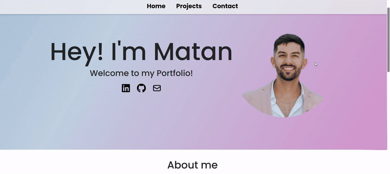
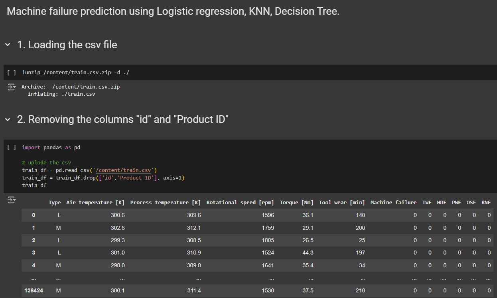
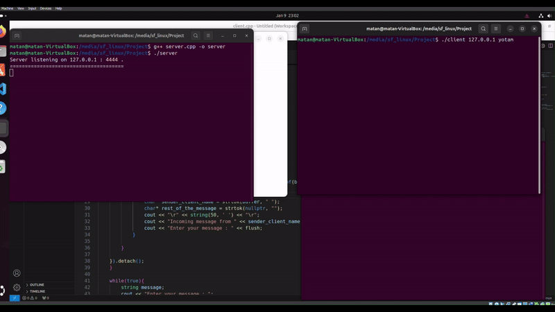
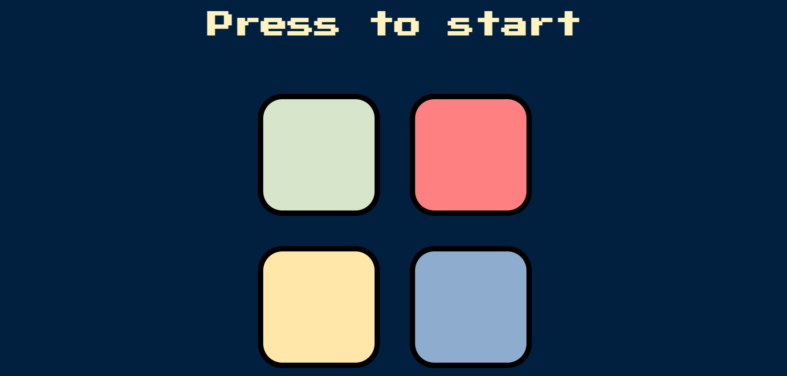

I am a third-semester computer science student at SCE College, holding an excellence certificate. With a strong passion for artificial intelligence and machine learning, I enjoy solving complex challenges and contributing to innovative projects. I thrive on developing creative solutions to problems and thinking outside the box, particularly when it comes to improving functionality and making technology more intuitive and effective.

This portfolio showcases my work as a third-semester computer science student at Sami Shamoon College (SCE), with a focus on my passion for artificial intelligence, machine learning, and problem-solving. As part of my journey, I aim to develop intuitive and efficient solutions in the tech world.
2025-01-16

The project focuses on developing and evaluating machine learning models to predict machine failures based on specific input features. The dataset contains a binary classification target variable labeled as "Machine failure". The goal is to build models capable of accurately predicting failures to minimize the risk of undetected critical events.
2024-12-20

This project implements a multi-client chat application using C++ with socket programming. It features a server and client architecture, enabling real-time communication between multiple clients in a local network. The system is built for simplicity and scalability, ensuring proper message handling and synchronization.
2025-1-12

The project is a web-based recreation of the classic Simon memory game. Players follow an increasingly complex sequence of colors and sounds, to replicate it correctly. The game uses HTML, CSS, and JavaScript (with jQuery) to manage its logic, animations, and interactions. Visual and auditory feedback enhance the experience, with a "Game Over" message for mistakes and a win condition after 50 levels.
2025-1-19